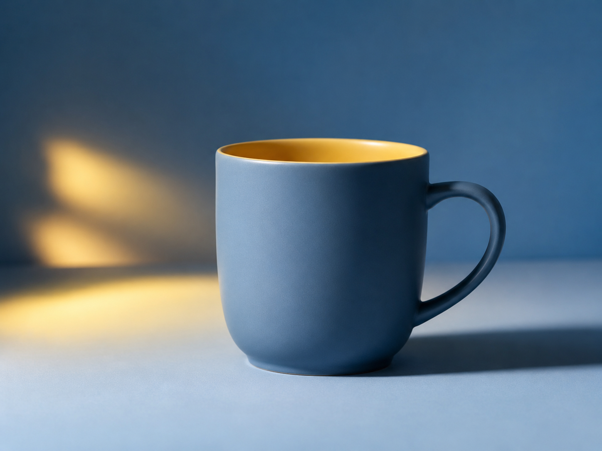

Evaluation
Final Studio Check
You have learned the lighting tools, shadow behavior, and how to adjust a 3-point lighting setup. Now complete the final challenge and post-test to show what you learned.
final studio challenge
Fix the Product Photo
Imagine your product photo has a strong dark shadow on one side, but you still want the product to keep depth. What is the best lighting adjustment?

choose an adjustment
What should you do?
Select one answer to see if it improves the lighting setup.
post-test
Final Check: What did you learn?
Complete the post-test using the same questions from the pre-test. This helps compare your understanding before and after using the Studio Challenge.
lesson complete
You completed Studio Challenge
You practiced identifying lighting tools, understanding shadows, and adjusting a 3-point lighting setup. These skills can help you create better tabletop product photos.
What is one lighting change you would try in a real product photo?